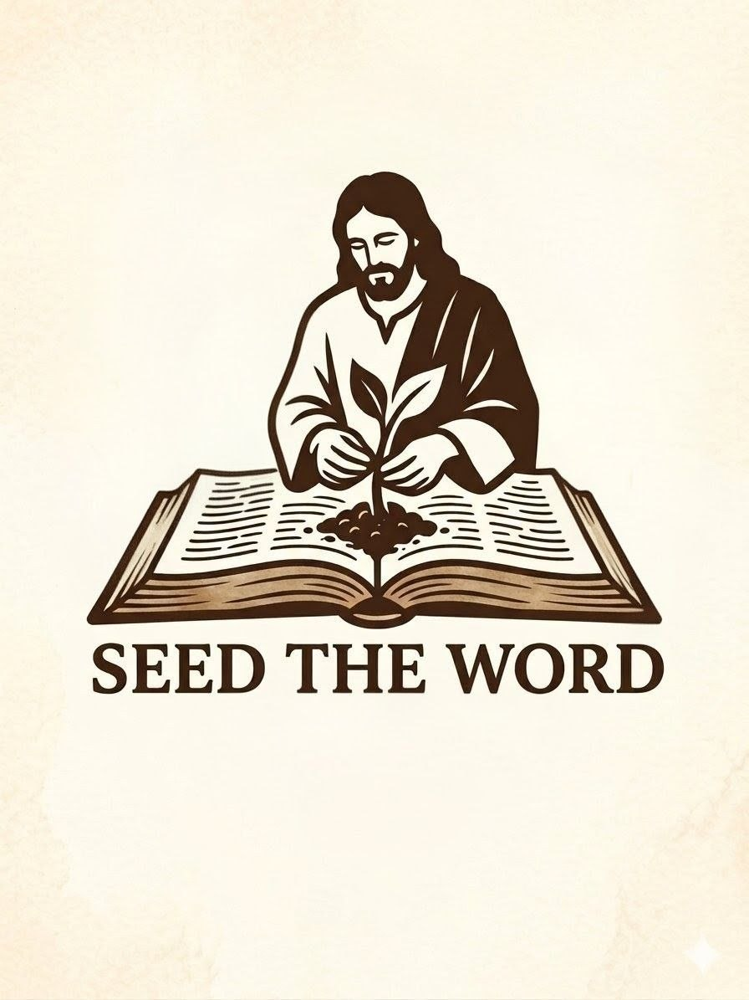

A Word from a Friend
Why the Church Can't Be Neutral Anymore
HungryGen — Pastor Vlad
A challenge to keep walking the line our ministry was built on: there is no neutral ground when it comes to Jesus. Sit with this one.

Seed the WordConnect, grow, and serve together in faith.
Read along with us Monday through Friday. Each day's card links to the Spotify episode of that chapter so members can listen along wherever they are.
Past teachings, studies, and worship sessions on Spotify — plus our live Saturday study you can join in real time.
🎵 Community playlist
A growing collection of worship, hymns, and prayer music that our community loves. Drop in songs that have moved you — we all listen together.
Open playlist in Spotify → · Free to listen. To add songs you'll need a Spotify account + the app on phone or desktop. First time adding? Tap the green button, accept the invite, then drop in songs from anywhere in Spotify.
🌱 Inspired to share more about God's kingdom? Got a verse that moved you, a study you'd love us to run, or a suggestion for the site? Tell us what you want to see — we read every note.
✉️ Drop us a lineOur community lives here
Real conversations, prayer, daily chapter-by-chapter reading, and the social feeds where our community shows up. Step-by-step cards below if you're new to any of the platforms.
Where we post, share, and keep members around the world in the loop.
Our most active space — daily Bible discussion, prayer, and community chat with members worldwide.
Free · Phone, tablet, desktop
Past teachings, studies, and worship sets on demand — revisit a sermon or catch up on an episode you missed.
Free · Follow the show for new drops
Where Study Saturday goes live. Join real-time Bible study, fellowship, and prayer with the community every Saturday.
Free · Account optional to watch
Photos and short videos from outreach, events, and behind-the-scenes moments from the ministry.
Free · DM for quick questions
📸 Recent on Instagram
Tap any card for a walkthrough — whether it's joining a platform for the first time or partnering with the ministry.
Daily Bible discussion, prayer, and community chat — our most active space.
Photos, videos, and behind-the-scenes from our outreach and events.
One chapter a day, Monday through Friday. Simple and sustainable.
Saturday evenings on Twitch — Bible study, fellowship, and prayer together.
Missed a session or want to revisit a study? Past teachings and worship sets live here.
Got a private question, prayer request, or want to request a free Bible? We answer every message.
Help prepare and distribute Bible bundles, visit newcomers, or support our weekly gatherings.
Help fund Bible bundles for those who cannot afford them. Every gift makes a difference.
Invite friends and family to join the community and help plant seeds of faith.